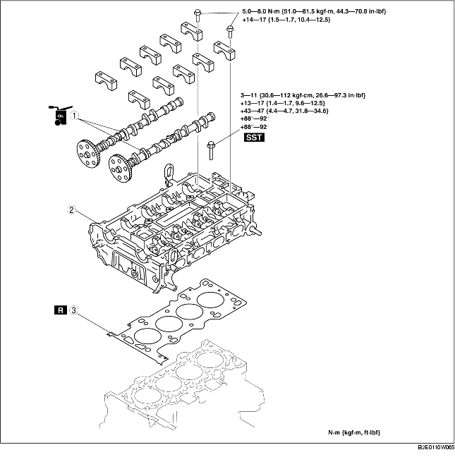

1. Remove the timing chain. (See TIMING CHAIN REMOVAL/INSTALLATION [LF].)
2. Remove the ignition coils. (See IGNITION COIL REMOVAL/INSTALLATION [LF].)
3. Remove the intake manifold. (See INTAKE-AIR SYSTEM REMOVAL/INSTALLATION [LF].)
4. Disconnect the following parts.
5. To firmly support the engine, first set the engine jack and attachment to the oil pan.
6. Remove in the order indicated in the table.
7. Install in the reverse order of removal.
8. Inspect the compression. (See COMPRESSION INSPECTION [LF].)

.
|
1
|
Camshaft
(See Camshaft Removal Note.)
(See Camshaft Installation Note.)
|
|
2
|
Cylinder head
(See Cylinder Head Removal Note.)
|
|
3
|
Cylinder head gasket
|
1. Loosen the camshaft cap bolts in 2-3 passes in the order shown in the figure.
1. Loosen the cylinder head bolts in 2-3 passes in the order shown in the figure.
1. Measure the length of each cylinder head bolt.
2. Tighten the cylinder head bolts in the order shown with the following 5 steps using the SST (49 D032 316).
1. Set the cam position of No.1 cylinder at the top dead center (TDC) and install the camshaft.
2. Temporarily tighten the camshaft bearing caps evenly in 2-3 passes.
3. Tighten the camshaft cap bolts in the order shown with the following two steps.